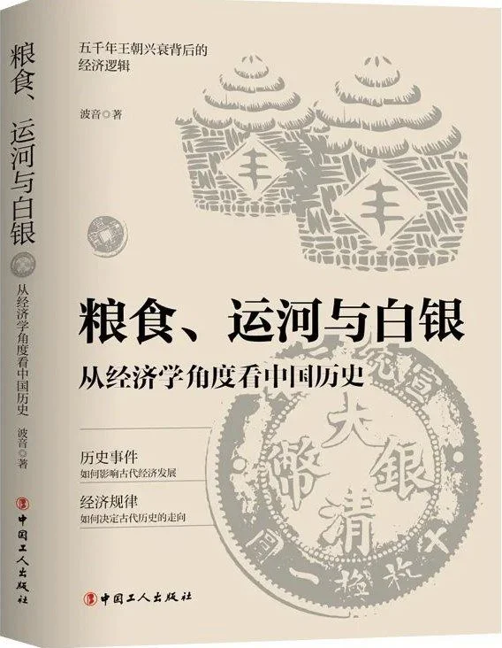

📖《粮食、运河与白银》从经济学的角度重新解读中国历史。作者揭示了粮食供应、运河运输、白银流通等经济因素如何深刻影响中国的历史进程。
非常棒的一本书，从经济学的角度解释了中国历史上的种种行为，让人豁然开朗。
传统的历史叙述往往聚焦于帝王将相的政治博弈，而这本书让人看到，经济基础才是决定上层建筑的关键因素。大运河为什么重要？因为它连接了粮食产地与政治中心。白银为何能改变明清格局？因为货币供应直接影响经济活力。粮食、运河、白银——这些看似枯燥的经济要素，实则是理解中国历史进程的重要钥匙。读完这本书，对中国历史的理解会深一层。